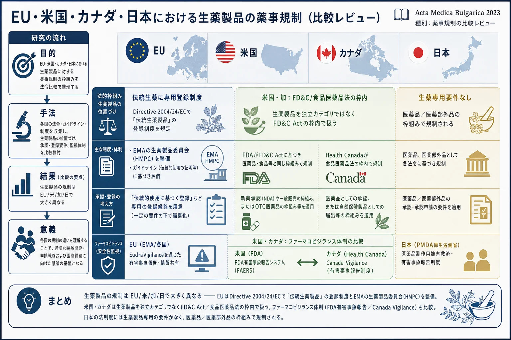

EU・米国・カナダ・日本における生薬製品の薬事規制（比較レビュー）

<!-- 方針: 4ページの規制比較レビューの全訳。原文構成に沿う。「> 補足:」は訳者注。 -->
書誌情報
- 原題: Pharmaceutical Regulation of Herbal Medicinal Products in the Countries of the European Union, the USA, Canada and Japan
- 著者: B. Hadzhieva（プロヴディフ医科大学 医療カレッジ）, M. Dimitrov, V. Petkova（責任著者・ソフィア医科大学薬学部）, ブルガリア
- 掲載: Acta Medica Bulgarica 2023, 50(3), 71–74. https://doi.org/10.2478/AMB-2023-0034
- 受領 2022-12-02 / 採録 2022-12-22
補足: 本稿は分析・QC手法の論文ではなく、生薬製品(herbal medicinal products)をどの法的枠組みで規制するかを EU・米国・カナダ・日本で比較した規制レビュー。当サイトの他の解説（指紋・Q-marker・ケモメトリクス）とは毛色が異なり、品質管理の「制度・法令」側の視点を補うもの。
要旨（Abstract）
生薬(herbal medicines)の規制は変化しつつあり、国によって異なる。米国の連邦食品医薬品化粧品法（FD&C Act）は、医薬品をその意図された用途に基づいて定義する。医薬品は上市前にFDAの事前承認を受けるか、OTC（一般用医薬品）であればそのカテゴリーの特定の規則（モノグラフと呼ばれる）の要件を満たさなければならない。カナダの食品医薬品法（R.S.C., 1985, c. F-27）における医薬品の定義は「製造・販売され、または使用に供される物質もしくは物質の組み合わせ」である。日本では、医薬品医療機器等法の目的は、医薬品・医薬部外品・化粧品・医療機器・医薬品等の品質・有効性・安全性を保証するために必要な規制によって公衆衛生を向上させることにある。EUにおける医薬品の定義は指令83/2001/EC（訳注: 正しくは2001/83/EC）の第I節「定義」で規定されている。対象4か国では、医薬品は医師の処方による医薬品（POM）と医師の処方箋なしで販売される医薬品（OTC）に分類される。比較分析の結果、EUには生薬製品に対する特定の要件と規制が存在することが示された。米国とカナダでは、生薬製品はFD&C Act（sec. 351-360n-1 U.S.C. 379e）およびカナダ食品医薬品法（R.S.C., 1985, c. F-27）の一部門として扱われる。日本の法令には、生薬製品に対する特定の要件は存在しない。
キーワード: 薬事法制、生薬製品、規制
はじめに（Introduction）
生薬の法制と規制は変化しており、国によって異なる。その理由は主に文化的側面に関連し、また生薬が科学的研究の対象となることがまれであるという事実にも関係している。
植物由来医薬品に関する問題は、1986年に医薬品規制のための世界保健機関（WHO）国際会議で初めて検討された。WHOは、各国の規制当局・科学組織・製造業者を支援することを目的として、生薬の品質・安全性・有効性の評価のための主要な基準を確立するためのガイドラインを公表している [1]。
現在、世界のほぼすべての薬局方 [2, 3, 4] は実際の薬用価値をもつ生薬を収載しており、ロシアやドイツのような国々では植物専用の薬局方が存在する。モノグラフは、消費者に情報を提供し、生薬を許可医薬品として登録する製造業者の申請を容易にするための公的文書として作成された [5, 6]。
植物由来医薬品は、植物性物質（生薬）の含有量、または植物性物質を加工したもの（刻み、生薬粉末、エキス）によってその活性が決まる医薬品である。現在、生理活性化合物の抽出とその類縁体の合成は、植物製品を開発するための有効なアプローチである。これらの化合物の研究は、価値ある医薬品・医療材料その他の商業的に重要な材料を得ることにつながりうる [7]。
目的（Purpose）: 本研究の目的は、EU諸国・米国・カナダ・日本における生薬製品の使用・流通の許可を規制する法制度環境の特有の性質を提示することである。
材料と方法（Materials and methods）
比較法制分析（comparative legislative analysis）——この方法を、EU諸国・米国・カナダ・日本における生薬製品の使用・流通に関する法的要件の比較に適用した。分析は以下の法令文書に適用した：
- 指令 2001/83/EC（ヒト用医薬品に関する共同体規範の確立）
- 指令 2004/24/EC（2004年3月31日、伝統生薬製品に関して指令2001/83/ECを改正）
- 連邦食品医薬品化粧品法（FD&C Act）, sec. 351-360 n-1 U.S.C. 379e
- 食品医薬品法（R.S.C., 1985, c. F-27）——カナダ政府
- 日本の薬事法（東京・厚生労働省）
結果（Results）
本研究の結果、対象国では医薬品分野の法的要件が類似していることが確認された（表1）。例えば対象国では、医薬品に対する要件は法律や指令の中で厳格に分類・規定されている。また各国とも、法令中に医薬品の定義が存在することが確認された。医薬品のカテゴリーについては、法令文書中に2つのカテゴリー——医師の処方による医薬品（POM）と医師の処方箋なしで販売される医薬品（OTC）——が規定されている。生薬製品に適用される要件と手続きは、医薬品として登録されるものと類似している。
表1. 生薬製品に関する法制度枠組みの比較分析の要点
| 項目 | EU | 米国 | カナダ | 日本 |
|---|---|---|---|---|
| 規制当局／機関 | 欧州医薬品庁（EMA）、欧州議会、欧州委員会、欧州評議会 | 食品医薬品局（U.S. FDA、米国保健福祉省） | Health Canada（食品医薬品法連絡室） | 厚生労働省、医薬品医療機器総合機構（PMDA） |
| 医薬品関連法 | 指令2001/83/EC；指令2012/26/EU；規則№726/2004；規則(EC)№1223/2009 | 連邦食品医薬品化粧品法（FD&C Act） | 食品医薬品法；規則；消費者包装表示法 | 医薬品医療機器等法（PMD Act） |
| 製品カテゴリー | 医薬品；医療製品 | 医薬品；医療製品 | POM；OTC；天然健康製品（NHP）；医療製品 | 医薬品；医薬部外品；医療機器（クラスA〜D） |
| 医薬品の定義 | (a) ヒトの疾病の治療・予防の性質をもつとされる物質／組み合わせ、または (b) 薬理学的・免疫学的・代謝的作用により生理機能を回復・矯正・変更する目的で、あるいは医学的診断の目的で使用・処方されうる物質／組み合わせ | FD&C Actは意図された用途に基づき定義：(A) 米国薬局方・ホメオパシー薬局方・国民医薬品集に収載の製品、(B) ヒト・動物の疾病の診断・治療・予防に用いる製品、(C)（食品以外で）身体の構造・機能に影響を与える製品、(D)(A)(B)(C)の成分として用いる製品 | 食品医薬品法：「製造・販売され、または (a) 疾病等の診断・治療・緩和・予防、(b) 器官機能の回復・矯正・修正、(c) 食品の製造・保管場所の消毒、に用いられる物質／組み合わせ」 | (i) 日本薬局方収載物質、(ii) 診断・治療・予防に用いる物質（医薬部外品を除く。歯科材料・衛生材料を含む）、(iii) 身体の構造・機能に影響を与える物質（化粧品・医薬部外品を除く） |
| 医薬品のカテゴリー | POM；OTC | POM；OTC | POM；OTC | POM；OTC |
| ファーマコビジランス | ファーマコビジランスリスク評価委員会 | FDA有害事象報告システム；MedWatch | Canada Vigilance Program；MedEffect Canada；ICH MedDRA | ICH MedDRA |
| ファーマコビジランスの義務 | 医療従事者・製造業者は必須／消費者は任意 | 医療従事者・消費者は任意 | 医療従事者・消費者は任意／製造業者は必須 | 医療従事者・製造業者は必須 |
考察（Discussion）
植物由来製品を明確化・標準化する必要性から、欧州議会は指令2004/24/EUを採択し、「伝統生薬製品（conventional herbal medicinal products）」という用語を導入して、これらの製品の登録に関する新しい規則を確立した。この指令および規則(EU)726/2004の執行の一環として、2004年9月に欧州医薬品庁に生薬製品委員会（Committee on Herbal Medicinal Products, HMPC）が設立された。生薬製品委員会は、各種薬用植物に関する要約モノグラフと、伝統生薬などとして使用が意図される生薬物質・製剤・組み合わせのリストを作成する権限をもつ [8]。
対象国の法制度環境は、ファーマコビジランス（医薬品安全性監視）に関する多くの要件を有する。ファーマコビジランスは、望ましくない医学的反応や医薬品に関連するその他の問題の発見・評価・研究・予防に関わる活動を扱う科学である [9]。
米国では、法的要件に従い、FDA有害事象報告システムが市販後安全監視のプログラムをもつ。これは、承認された医薬品や治療用生物学的製剤によって引き起こされた望ましくない反応に関する報告——FDAが製造業者から規制に従って受領したもの——からなるコンピュータ化された情報データベースである。
カナダでは、Canada Vigilance Program がHealth Canadaの市販後監視システムである。このプログラムは、健康製品の疑わしい副作用に関する報告を収集・確立する目的で1965年に開始された。世界的な現代の情報通信技術（ICT）の活用は、資源のより効率的な利用と医薬品ケアの管理に大きな利点をもたらすであろう [10]。
結論（Conclusion）
対象国で実施した比較法制分析により、EU諸国には生薬製品に対する特定の要件と規制が存在することが示された。欧州医薬品庁の役割は、その生薬製品委員会（HMPC）を通じて、こうした医薬品の品質・安全性・有効性に関する科学的見解を作成し、それらに関する規制情報がEU全体の枠組みに適合するようにすることである。
米国とカナダについては、生薬製品はFD&C Act（sec. 351-360n-1 U.S.C. 379e）およびカナダ食品医薬品法（R.S.C., 1985, c. F-27）の一部門として扱われる。
日本の法令には、生薬製品に対する特定の要件は存在しない。
補足（日本の位置づけ）: 本レビューは「日本には生薬製品専用の要件がない」と結論しているが、これは西洋的な「herbal medicinal product」という独立カテゴリが法定されていないという意味であり、日本では漢方製剤・生薬が医薬品（医療用漢方製剤・一般用漢方製剤）や医薬部外品として医薬品医療機器等法の枠内で規制され、日本薬局方・一般用漢方製剤製造販売承認基準等で品質が担保されている点に留意。
参考文献
原論文の参考文献。番号は本文の引用 [N] に対応（クリックで該当文献へジャンプ）。DOIのある文献はDOI、無い文献はGoogle Scholar検索へのリンク。
- World Health Organization. WHO guidelines for assessing quality of herbal medicines with reference to contaminants and residues. Geneva, 2007. — WHO IRIS
- Council of Europe (COE) – European Directorate for the Quality of Medicines. European Pharmacopoeia 6th Edition. Strasbourg, 2007. — Google Scholarで探す
- British Pharmacopoeia Commission. British Pharmacopoeia 2011. London: Stationery Office, 2011. — Google Scholarで探す
- United States Pharmacopeial Convention. The United States Pharmacopeia: the National Formulary. 31st revision, Washington, 2008. — Google Scholarで探す
- Turcasso NM, Cooper JC. Herbal Medicine: Reliable Information Resources. Journal of Pharmacy Practice. 1999; 12(3): 187-195. — DOI
- Nathan M, Robert S. The Complete German Commission E Monographs: Therapeutic Guide to Herbal Medicines. Ann Intern Med. 1999; 130(5): 459. — DOI
- Ahmed E, Arshad M, Khan MZ et al. Secondary metabolites and their multidimensional prospective in plant life. Journal of Pharmacognosy and Phytochemistry. 2017; 6(2): 205-214. — Google Scholarで探す
- European Medicines Agency. Procedure for the preparation of Community monographs for traditional herbal medicinal products. 2007. — EMA
- Valchanova V, Petkova VB. Pharmacovigilance and cosmetovigilance to the European legislation. Science Pharmacology. 2014; 2: 4-8. — Google Scholarで探す
- Kilova K, Mihaylova A, Peikova L. Opportunities of information communication technologies for providing pharmaceutical care in the COVID-19 pandemic. Pharmacia. 2021; 68(1): 9-14. — DOI